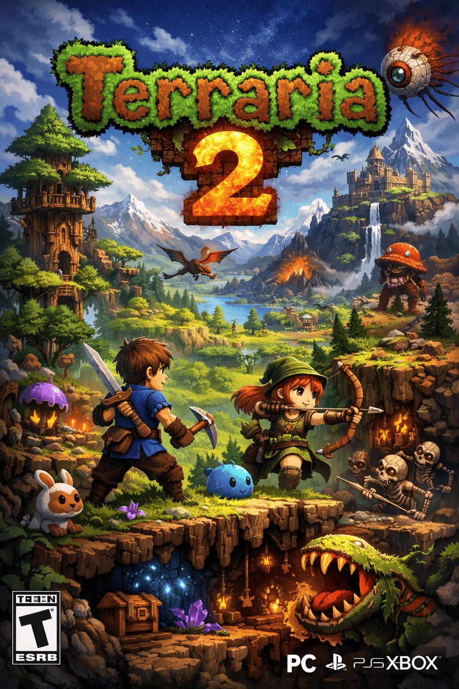
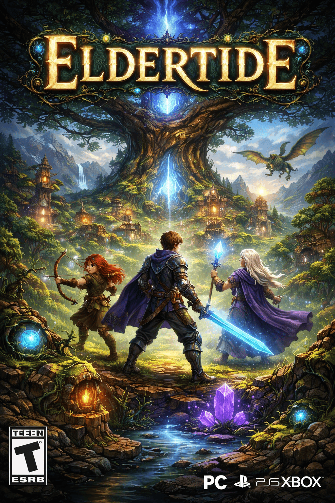
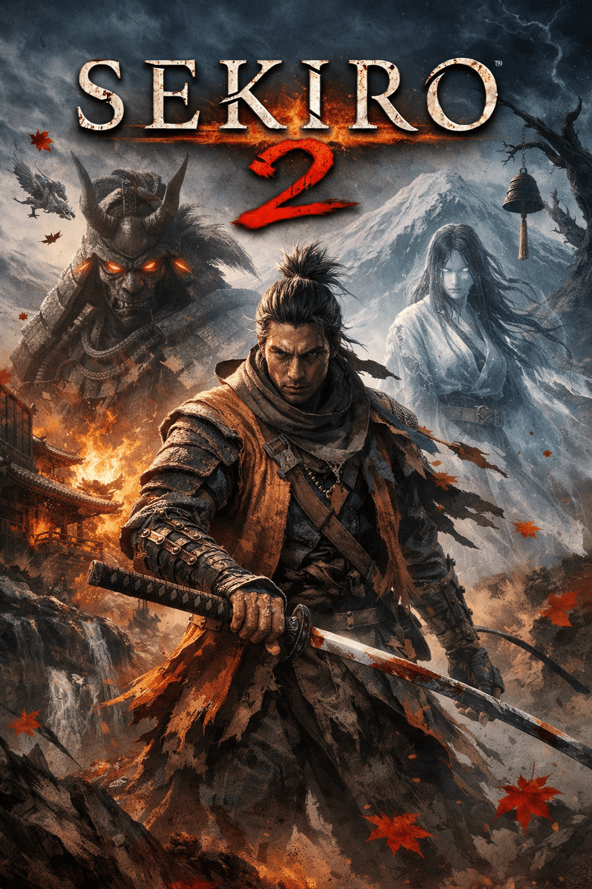
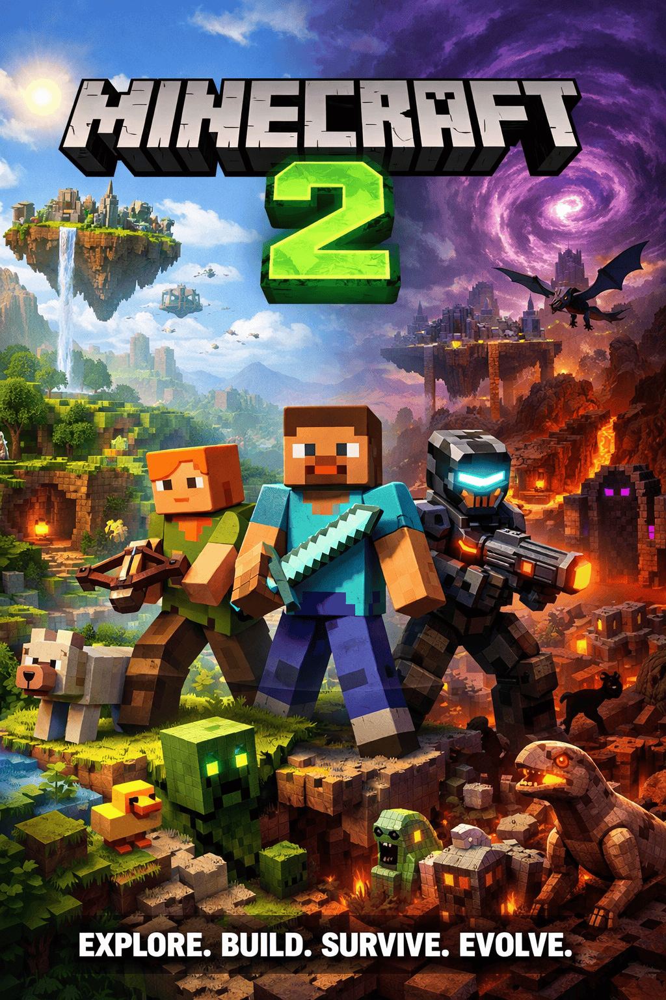
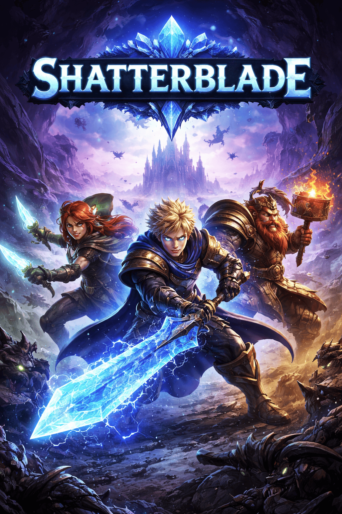
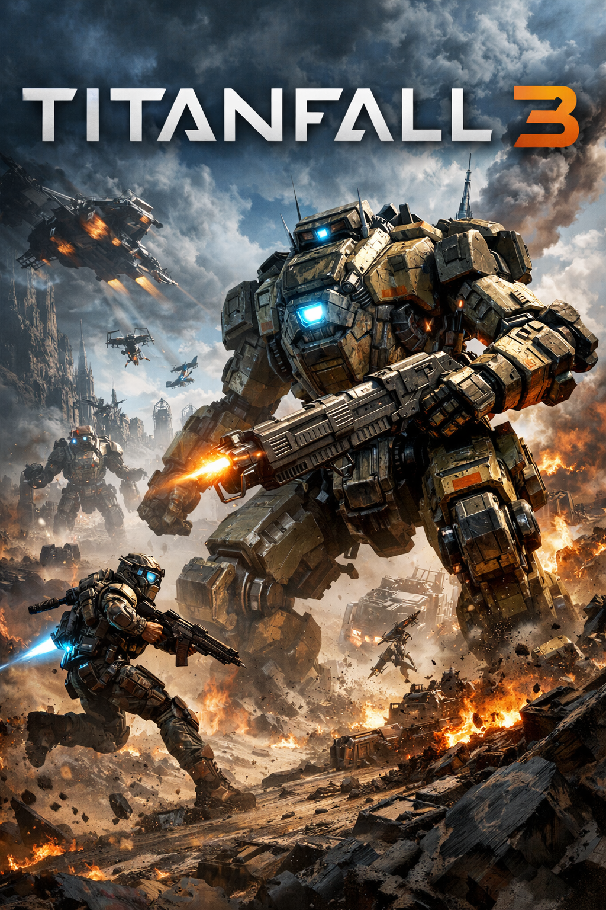

Terraria 2 is our newest game that can be played by you and your friends together! Explore the world fighting your way through enemies and encountering bosses. Will you be the one to beat the ancient terrarian and save the world of verdantia?

Eldertide is a new open world game with lots of active users daily. make friends with players or fight them, it's your choice! venture towards eldertree while completing quests and leveling up. Find the final boss at the top of the eltertree. Good Luck

Sekiro 2 is a third-person game combining Sekiro and elden ring to create one of the hardest sword fighting video games that you can find. You constantly find yourself fighting in high stakes combat as a character named Wolf working your way through the story collecting new weapons as you progress eventually facing the final boss and saving Sekiro once again.

Minecraft is back and new challenges await! Minecraft 2 has lots of updates deisgned around what could be improved with Minecraft. Build whatever you dream of and take down the witherstorm! Collaborate with friends and complete challenging quets provided by all the new mobs that can be found everywhere. Explore the skylands to find aetherite and unlock new abilities!

Shatterblade is a fast-paced fantasy action game set in a world where a powerful crystal that once protected the kingdom has shattered into many fragments. Dark creatures and ruthless warlords now hunt these shards to gain power and control the realm. Players take on the role of a young warrior who wields the legendary Shatterblade, a weapon forged from the crystal itself that can unleash powerful elemental attacks. Discover these elements as your journey progresses.

Titanfall 3 is a fast-paced futuristic first-person shooter where elite pilots battle alongside powerful giant mechs called Titans across massive war-torn environments. The game features an exciting story mode that follows a cinematic campaign set in the Frontier, where players experience intense missions, dramatic battles, and the bond between pilots and their Titans while using abilities like wall-running, jetpacks, and grappling to move through the battlefield. Alongside the campaign, the game includes a large online multiplayer mode where players compete in fast-paced matches, calling down Titans during combat and working with teammates in different modes such as team battles and objective-based missions.